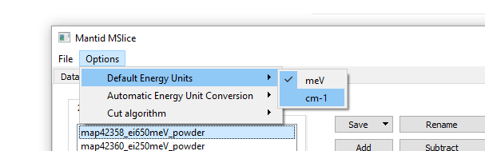

If you change the default units within MSlice to cm-1 (instead of meV) like this:

then any time you switch between datasets on the left hand side of the Workspace Manager tab then it repeatedly converts whatever values are in the energy boxes as if they were meV and need to be in cm-1.
Hard to explain, hopefully very easy to replicate. It has been like this since the default energy units setting was put in but I kept forgetting to report it!
Thanks.
Out of interest, what version are you currently using?
Interesting, this isn’t exactly the behaviour I see. I see your problem, only if I change the unit using the
en combobox at the bottom left of the slice section, not through options > Default energy units.
That’s probably just a difference between Mac and Windows.
Thanks for reporting!
Hi Daniel. Thanks for responding. I tested in Windows version 6.0.0 today, but I have noticed it on a range of earlier versions, specifically including at least one Linux version as well (installed in the MAPS cabin for users to use).
I haven’t tried Mac!
Hi Hamish, I’ve tried on Windows, but I’m not sure I can see the same behaviour that you are seeing?
When you get the chance, can you download the latest release 6.2 and see if you still get the same problem? https://download.mantidproject.org/
Hi Daniel.
So I just replicated it (at least partially) in 6.2 on Windows.
I loaded two datasets into the Workspace manager in MSlice, set the default units to cm^-1 as before.
Next if I go to the “cut” tab (sorry, I think I omitted that detail in my original post!) - and I go to cut along DeltaE, I enter some values for the energy limits in the top box. An example here:
If I then simply click between the two data sets in the workspace manager on the left, the values in the text boxes get incrementally smaller every time, as if each time you swap the active data set it is performing a conversion over and over.
I hope that makes more sense? If I was in I would show you in person but I am at home!
I could do a screen share on zoom if that was easier. Let me know.
Edit to add: I appreciate this probably seems like a really trivial bug, but within the workflow of comparing a number of different spectra, having to re-enter the plot range every time you swap from one experiment to the next becomes increasingly frustrating when you want to plot them together!
Thank you! Sorry I didn’t think to try cuts (still winding up for the New Year!) I can reproduce this easy. Very odd that the values get smaller and smaller!